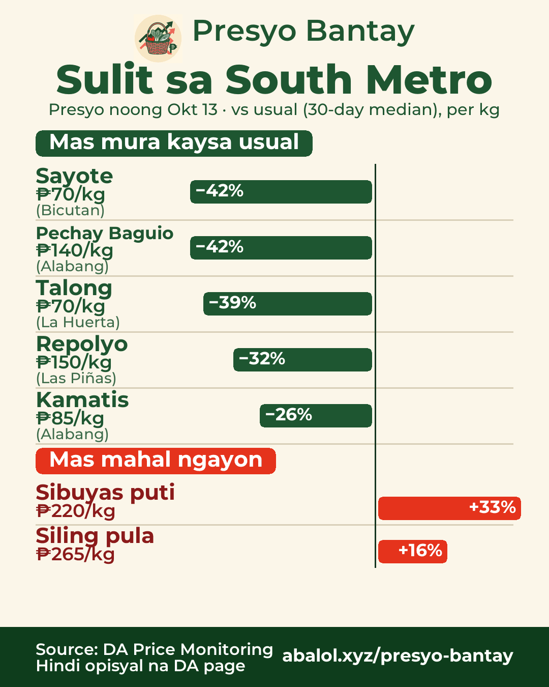
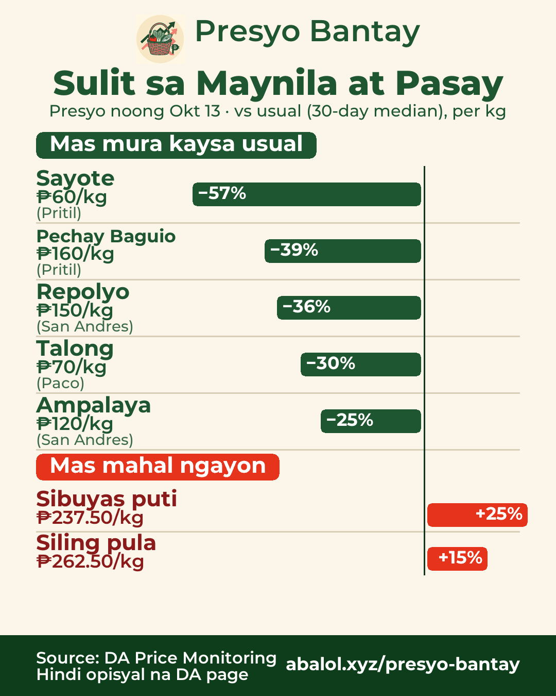
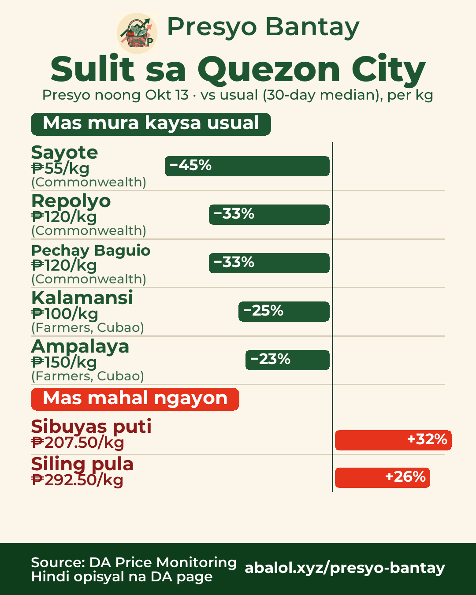
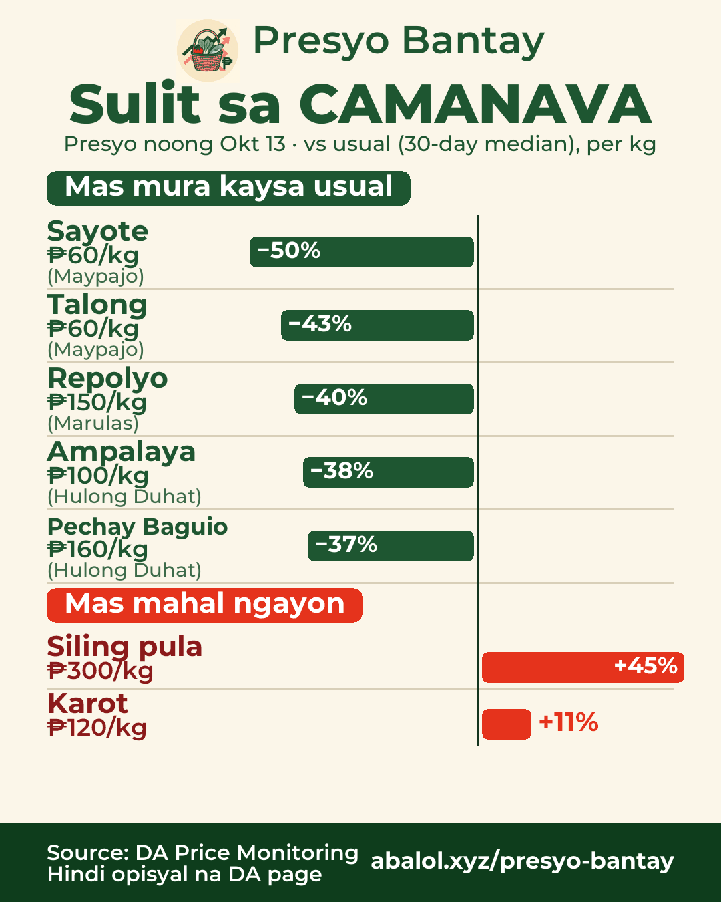
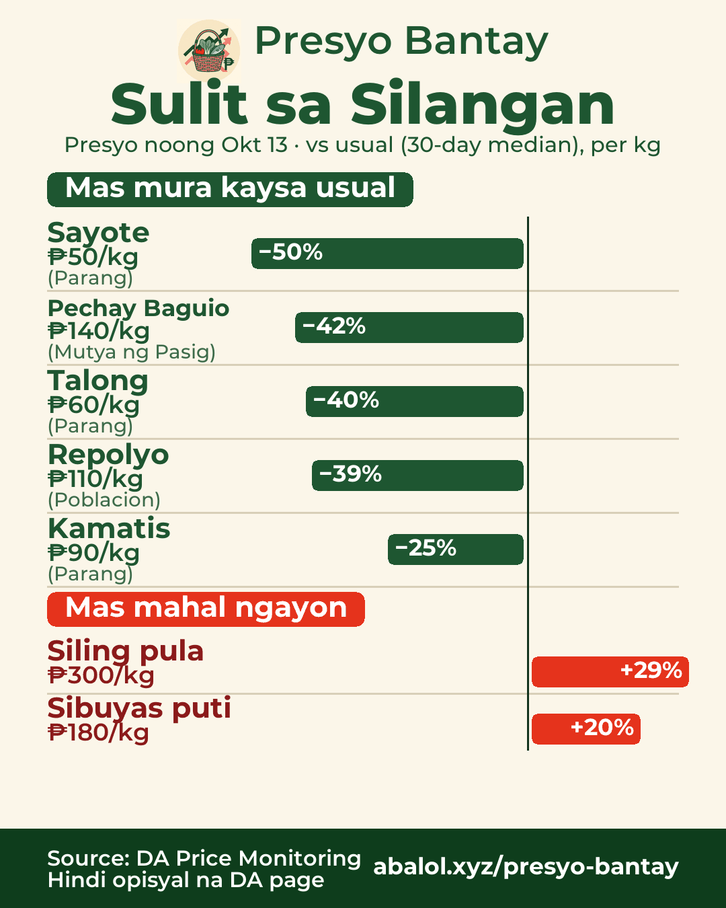

Okt 13, 2026Oct 13, 20262026年10月13日
Sulit sa palengkeMarket deals市場のお買い得
% = kumpara sa usual na presyo (30 araw)% = vs usual price (30-day)% = 30日間のいつもの価格比
South MetroSouth Metro南部（ラス・ピニャス周辺）

🛒 Sulit sa South Metro — presyo noong Okt 13
✅ Mas mura kaysa usual:
- Sayote ₱70/kg (−42%) · Bicutan
- Pechay Baguio ₱140/kg (−42%) · Alabang
- Talong ₱70/kg (−39%) · La Huerta
- Repolyo ₱150/kg (−32%) · Las Piñas
- Kamatis ₱85/kg (−26%) · Alabang
⚠️ Mas mahal ngayon:
- Sibuyas puti ₱220/kg (+33%)
- Siling pula ₱265/kg (+16%)
🇬🇧 Deals in South Metro — prices of Oct 13
✅ Chayote ₱70 (−42%), Pechay Baguio ₱140 (−42%), Eggplant ₱70 (−39%), Cabbage ₱150 (−32%), Tomato ₱85 (−26%)
⚠️ Pricier: White onion ₱220 (+33%), Red chili ₱265 (+16%)
🇯🇵 南部（ラス・ピニャス周辺）のお買い得 — 10/13の価格
✅ サヨテ ₱70（−42%）、ペチャイ・バギオ ₱140（−42%）、ナス ₱70（−39%）、キャベツ ₱150（−32%）、トマト ₱85（−26%）
⚠️ 高め：白玉ねぎ ₱220（+33%）、赤唐辛子 ₱265（+16%）
Maynila at PasayManila & Pasayマニラ・パサイ

🛒 Sulit sa Maynila at Pasay — presyo noong Okt 13
✅ Mas mura kaysa usual:
- Sayote ₱60/kg (−57%) · Pritil
- Pechay Baguio ₱160/kg (−39%) · Pritil
- Repolyo ₱150/kg (−36%) · San Andres
- Talong ₱70/kg (−30%) · Paco
- Ampalaya ₱120/kg (−25%) · San Andres
⚠️ Mas mahal ngayon:
- Sibuyas puti ₱237.50/kg (+25%)
- Siling pula ₱262.50/kg (+15%)
🇬🇧 Deals in Manila & Pasay — prices of Oct 13
✅ Chayote ₱60 (−57%), Pechay Baguio ₱160 (−39%), Cabbage ₱150 (−36%), Eggplant ₱70 (−30%), Ampalaya ₱120 (−25%)
⚠️ Pricier: White onion ₱237.50 (+25%), Red chili ₱262.50 (+15%)
🇯🇵 マニラ・パサイのお買い得 — 10/13の価格
✅ サヨテ ₱60（−57%）、ペチャイ・バギオ ₱160（−39%）、キャベツ ₱150（−36%）、ナス ₱70（−30%）、ゴーヤ ₱120（−25%）
⚠️ 高め：白玉ねぎ ₱237.50（+25%）、赤唐辛子 ₱262.50（+15%）
Quezon CityQuezon Cityケソン市

🛒 Sulit sa Quezon City — presyo noong Okt 13
✅ Mas mura kaysa usual:
- Sayote ₱55/kg (−45%) · Commonwealth
- Repolyo ₱120/kg (−33%) · Commonwealth
- Pechay Baguio ₱120/kg (−33%) · Commonwealth
- Kalamansi ₱100/kg (−25%) · Farmers, Cubao
- Ampalaya ₱150/kg (−23%) · Farmers, Cubao
⚠️ Mas mahal ngayon:
- Sibuyas puti ₱207.50/kg (+32%)
- Siling pula ₱292.50/kg (+26%)
🇬🇧 Deals in Quezon City — prices of Oct 13
✅ Chayote ₱55 (−45%), Cabbage ₱120 (−33%), Pechay Baguio ₱120 (−33%), Calamansi ₱100 (−25%), Ampalaya ₱150 (−23%)
⚠️ Pricier: White onion ₱207.50 (+32%), Red chili ₱292.50 (+26%)
🇯🇵 ケソン市のお買い得 — 10/13の価格
✅ サヨテ ₱55（−45%）、キャベツ ₱120（−33%）、ペチャイ・バギオ ₱120（−33%）、カラマンシー ₱100（−25%）、ゴーヤ ₱150（−23%）
⚠️ 高め：白玉ねぎ ₱207.50（+32%）、赤唐辛子 ₱292.50（+26%）
CAMANAVANorth (CAMANAVA)北部（カマナバ）

🛒 Sulit sa CAMANAVA — presyo noong Okt 13
✅ Mas mura kaysa usual:
- Sayote ₱60/kg (−50%) · Maypajo
- Talong ₱60/kg (−43%) · Maypajo
- Repolyo ₱150/kg (−40%) · Marulas
- Ampalaya ₱100/kg (−38%) · Hulong Duhat
- Pechay Baguio ₱160/kg (−37%) · Hulong Duhat
⚠️ Mas mahal ngayon:
- Siling pula ₱300/kg (+45%)
- Karot ₱120/kg (+11%)
🇬🇧 Deals in North (CAMANAVA) — prices of Oct 13
✅ Chayote ₱60 (−50%), Eggplant ₱60 (−43%), Cabbage ₱150 (−40%), Ampalaya ₱100 (−38%), Pechay Baguio ₱160 (−37%)
⚠️ Pricier: Red chili ₱300 (+45%), Carrots ₱120 (+11%)
🇯🇵 北部（カマナバ）のお買い得 — 10/13の価格
✅ サヨテ ₱60（−50%）、ナス ₱60（−43%）、キャベツ ₱150（−40%）、ゴーヤ ₱100（−38%）、ペチャイ・バギオ ₱160（−37%）
⚠️ 高め：赤唐辛子 ₱300（+45%）、にんじん ₱120（+11%）
SilanganEast Metro東部

🛒 Sulit sa Silangan — presyo noong Okt 13
✅ Mas mura kaysa usual:
- Sayote ₱50/kg (−50%) · Parang
- Pechay Baguio ₱140/kg (−42%) · Mutya ng Pasig
- Talong ₱60/kg (−40%) · Parang
- Repolyo ₱110/kg (−39%) · Poblacion
- Kamatis ₱90/kg (−25%) · Parang
⚠️ Mas mahal ngayon:
- Siling pula ₱300/kg (+29%)
- Sibuyas puti ₱180/kg (+20%)
🇬🇧 Deals in East Metro — prices of Oct 13
✅ Chayote ₱50 (−50%), Pechay Baguio ₱140 (−42%), Eggplant ₱60 (−40%), Cabbage ₱110 (−39%), Tomato ₱90 (−25%)
⚠️ Pricier: Red chili ₱300 (+29%), White onion ₱180 (+20%)
🇯🇵 東部のお買い得 — 10/13の価格
✅ サヨテ ₱50（−50%）、ペチャイ・バギオ ₱140（−42%）、ナス ₱60（−40%）、キャベツ ₱110（−39%）、トマト ₱90（−25%）
⚠️ 高め：赤唐辛子 ₱300（+29%）、白玉ねぎ ₱180（+20%）